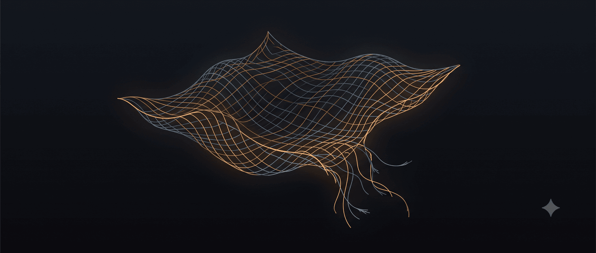

May be an image of text that says ‘RISK UNCERTAINTY AND PROFIT Frank H. Knight Vì sao thời đại này khiến khiế Gen z đau khổ (Và họ có thể làm gì)’
Năm 1688, ở khu Tower Street của London, một người đàn ông tên Edward Lloyd mở một quán cà phê nhỏ. Quán không có gì đặc biệt, ít nhất là khi nhìn từ bên ngoài: vài chiếc bàn dài, mùi cà phê pha kiểu Thổ, tiếng người Anh nói chuyện trong khói thuốc lá. Khác biệt nằm ở thành phần khách. Vì quán nằm gần bến cảng, nó dần trở thành điểm tụ tập của thuyền trưởng, chủ tàu, môi giới hàng hải, và các thương nhân cần biết tin tức từ những con tàu đang lênh đênh đâu đó giữa Đại Tây Dương. Edward Lloyd là một chủ quán có óc kinh doanh: ông cho dán bảng tin về tàu thuyền lên tường, thuê người đi thu thập thông tin từ các cảng, và cung cấp giấy bút sạch cho khách hàng làm hợp đồng ngay tại bàn cà phê.
Trong những hợp đồng được ký dưới ánh nến mờ ở quán Lloyd, có một loại đặc biệt, không để mua bán hàng hóa, thuê nhân công hay vay mượn. Nó nói: nếu con tàu này không trở về, một nhóm người ở đây sẽ trả cho chủ tàu một khoản tiền. Đổi lại, chủ tàu trả trước cho nhóm đó một số tiền nhỏ hơn nhiều, gọi là phí.
Trước khi loại hợp đồng này tồn tại, mỗi chuyến tàu rời cảng là một canh bạc thuần túy. Người ta bỏ tài sản cả đời vào một con tàu và cầu nguyện. Tàu về thì giàu, tàu không về thì mất tất. Sau quán cà phê của Lloyd, một thứ gì đó đã thay đổi. Dù biển, tàu, và xác suất chìm tàu vẫn không thay đổi trong nhiều thế kỷ kế tiếp. Cái thay đổi nằm ở chỗ khác. Nó là gì? Bài viết này sẽ tìm câu trả lời đó.
Câu trả lời này liên quan trực tiếp đến lý do vì sao thế hệ trẻ hôm nay đang sống trong một cảm giác bất an mà các thế hệ trước hiếm khi mô tả. Và để đi từ Lloyd’s đến đó, chúng ta cần đi đường vòng qua một người Mỹ ít ai nhớ tên.
I. Frank Knight và sự phân biệt khiến câu chuyện của Lloyd trở nên có nghĩa
Năm 1921, một kinh tế gia trẻ ở Đại học Chicago tên Frank Knight xuất bản luận án tiến sĩ với cái tên trông khô khốc: Risk, Uncertainty, and Profit (Rủi ro, Bất định và Lợi nhuận). Cuốn sách lập tức trở thành kinh điển, chỉ nhờ một sự phân biệt mà Knight đề xuất ngay ở chương đầu - một sự phân biệt gần như mọi cuộc trò chuyện về tương lai sau này đều phải dựa vào, dù phần lớn không nhận ra.
Knight nói: có hai thứ rất khác nhau mà người ta vẫn gọi chung là “rủi ro”. Thứ nhất, có những tình huống ta không biết kết quả nhưng biết các khả năng và tỷ lệ - như khi tung một đồng xu công bằng. Đây là risk. Thứ hai, có những tình huống ta thậm chí không biết các khả năng - không có bảng xác suất, không có dữ liệu lịch sử, không có cách nào đặt một con số. Đây là uncertainty, hay sau này thường được gọi là “Knightian uncertainty”.
Một sòng bạc không bao giờ phá sản vì roulette, vì roulette là risk - sòng bạc biết chính xác biên lợi nhuận của mình. Một công ty bảo hiểm xe hơi không phá sản vì tai nạn giao thông, vì có hàng triệu điểm dữ liệu để tính toán phí bảo hiểm. Nhưng cùng công ty đó có thể phá sản chỉ trong vài tháng nếu một đại dịch chưa từng xảy ra, hoặc một công nghệ mới làm cho mọi người không lái xe nữa. Cái thứ hai không phải risk. Đó là uncertainty.
Quay lại Edward Lloyd. Trước khi quán cà phê của ông tồn tại, mỗi chuyến tàu là một uncertainty thuần khiết với chủ tàu: không biết mất bao nhiêu (mất tất cả, mất một phần, hay mất gì), không biết với xác suất bao nhiêu, không biết khi nào. Sau Lloyd’s, chủ tàu vẫn không biết tàu mình có chìm hay không. Xác suất tàu chìm vẫn vậy. Điều thay đổi là chủ tàu đã chuyển uncertainty của mình sang một nhóm người khác, và đổi lấy một con số rõ ràng - phí bảo hiểm. Với chủ tàu, tương lai tài chính của ông ta đã đi từ uncertainty (mất tất cả hoặc không, không biết) sang risk (chắc chắn mất khoản phí, có một xác suất nhỏ được bồi thường lại). Một loại tương lai có hình thù.
Cái đẹp của trò ảo thuật này, cần nhấn mạnh, không nằm ở toán học. Toán xác suất đã tồn tại trước Lloyd’s hàng thập kỷ - Pascal và Fermat đã viết về nó từ giữa thế kỷ 17. Cái đẹp nằm ở chỗ một cấu trúc xã hội đã được dựng lên để chuyển tải uncertainty từ một người sang một tập hợp, và bằng cách phân tán nó qua nhiều người, đã làm cho toàn bộ tập hợp đối diện với risk thay vì uncertainty. Bảo hiểm không hủy diệt rủi ro. Nó “chuyển hóa” rủi ro từ một dạng không thể xử lý sang một dạng có thể xử lý.
Đây là điều cần ghi nhớ trong toàn bộ phần còn lại của bài viết. Chúng ta sẽ quay lại với Lloyd’s, nhưng trước tiên cần đi sang một câu hỏi khác: vì sao một thế hệ trẻ hôm nay lại đang sống trong một thứ rất giống với uncertainty, nhưng không phải risk?
II. Một thế hệ thức dậy cảm thấy không có mặt đất dưới chân
Năm 2017, nhà tâm lý học Jean Twenge, công tác tại Đại học San Diego State, xuất bản cuốn “iGen” dựa trên hơn một thập kỷ dữ liệu khảo sát thanh thiếu niên Mỹ. Bà phát hiện một sự đứt gãy rõ rệt trong nhiều chỉ số sức khỏe tâm thần bắt đầu vào khoảng năm 2012, cùng thời điểm smartphone trở nên phổ biến. Tỷ lệ trầm cảm, lo âu, cô đơn, và ý nghĩ tự sát ở thanh thiếu niên Mỹ tăng nhanh, đặc biệt ở nữ. Bảy năm sau, nhà tâm lý học xã hội Jonathan Haidt mở rộng phân tích này trong “The Anxious Generation” (2024), bổ sung dữ liệu từ nhiều quốc gia và đặt khung lý thuyết về một sự “đấu nối lại” (great rewiring) tuổi thơ.
Khảo sát Stress in America của Hiệp hội Tâm lý học Hoa Kỳ (APA) đưa ra một con số đáng chú ý hơn: trong các nhóm thế hệ được khảo sát, Generation Z liên tục báo cáo mức độ stress cao nhất, và đặc biệt cao về các vấn đề có tính hệ thống - biến đổi khí hậu, kinh tế, súng đạn, tương lai chính trị. Đây không phải lo lắng về kỳ thi cuối kỳ hay tương tự, mà là một dạng lo lắng cấu trúc.
Một số người sẽ phản đối và sẽ nói: mọi thế hệ đều nghĩ thế hệ mình đang sống trong thời điểm đặc biệt khốn khó. Thế hệ chiến tranh thế giới thứ hai đối diện cái chết hằng ngày. Thế hệ chiến tranh lạnh sống dưới bóng vũ khí hạt nhân. Vì sao Gen Z lại có quyền than thở khi họ giàu có hơn, sống lâu hơn, và an toàn hơn về mặt thống kê so với bất kỳ thế hệ nào trong lịch sử?
Lập luận này không sai - và đây chính là chỗ Knight giúp ta nhìn rõ hơn. Người sống qua chiến tranh thế giới đối diện cái chết, nhưng cái chết là một risk có hình thù: bom rơi, súng nổ, đói. Người sống qua chiến tranh lạnh đối diện một uncertainty (chiến tranh hạt nhân), nhưng đồng thời sống trong một xã hội với rất nhiều cấu trúc giúp chuyển uncertainty thành risk: việc làm trọn đời, lương hưu nhà nước, hôn nhân ổn định, bậc thang sự nghiệp khả đoán, nhà ở mua được bằng đồng lương trung bình. Cấu trúc này, dù không hoàn hảo, đã thực hiện cùng phép thuật của Lloyd’s: nó không xóa rủi ro nhưng nó làm cho rủi ro có hình thù.
Tình thế Gen Z không phải họ đối diện nhiều rủi ro hơn. Họ đối diện nhiều uncertainty hơn, và ít cơ chế chuyển hóa uncertainty thành risk hơn. Việc làm trọn đời đã biến mất; sự nghiệp tuyến tính bị thay bằng “gig economy” và những chuyển ngành liên tục; nhà ở trong nhiều thành phố lớn đã rời khỏi tầm với của một mức lương trung bình; AI đang đe dọa các nghề nghiệp mà chỉ cách đây năm năm còn được coi là an toàn; biến đổi khí hậu là một uncertainty tổng quát không thể bảo hiểm. Nói cách khác, các “Lloyd’s coffee houses” mà thế hệ trước thừa hưởng đang đóng cửa nhanh hơn các quán mới mở.
Tuy vậy, chẩn đoán này chỉ là bề mặt, và dù đúng, nó vẫn chưa đủ. Nó vẫn ngầm giả định rằng tương lai là một “vùng” gì đó ngoài kia, và nhiệm vụ của ta là bước vào đó với các công cụ tốt hơn. Sự giả định này, hóa ra, là một sai lầm phương pháp luận.
Trước khi đến đó, chúng ta cần một đoạn đường vòng nữa, qua một bài báo học thuật ít người ngoài giới sử học từng đọc.
III. E.P. Thompson, đồng hồ, và phát hiện kỳ lạ về một dạng nhẹ nhõm
Năm 1967, sử gia Anh E.P. Thompson xuất bản bài báo “Time, Work-Discipline, and Industrial Capitalism” (Thời gian, Kỷ luật làm việc và Nền công nghiệp Tư bản) trên tạp chí Past & Present. Bài báo bàn về một chuyện nghe rất tầm thường: vì sao chúng ta đi làm theo giờ.
Trên thực tế, đến tận thế kỷ 18, khái niệm “giờ làm việc” gần như không tồn tại trong đầu một nông dân hay một thợ thủ công Anh. Người ta làm việc theo nhịp tự nhiên: theo mùa, theo ánh sáng mặt trời, theo lượng đơn đặt hàng, theo tâm trạng. Một thợ dệt ở thế kỷ 17 có thể làm việc 14 tiếng vào ngày này và uống rượu nguyên ngày hôm sau (gọi là “Saint Monday”). Khái niệm “đi làm 8 giờ sáng đến 5 giờ chiều, từ thứ Hai đến thứ Sáu” đối với người này sẽ là một dạng tra tấn phi tự nhiên.
Thompson cho thấy việc ép con người vào nhịp đồng hồ là một quá trình kéo dài hai thế kỷ, kèm theo phản kháng dữ dội. Thợ thuyền đốt đồng hồ nhà máy. Trẻ em trong các trường công bị đánh vì không biết đọc giờ. Nhịp tự nhiên của thân thể bị ép vào nhịp cơ học của máy hơi nước. Đến cuối thế kỷ 19, công đoàn - vốn hình thành để chống lại chính cái kỷ luật thời gian này - lại đấu tranh không phải để xóa bỏ giờ làm việc, mà để giảm nó xuống còn 8 giờ. Cái ban đầu là gông cùm giờ thành thước đo và điều kiện để định nghĩa tự do.
Vì sao? Vì lịch trình cố định, dù áp đặt và phi tự nhiên, trao cho cả công nhân lẫn chủ một loại tương lai có hình thù. Công nhân biết chính xác khi nào mình tự do, khi nào mình phải làm. Chủ biết chính xác khi nào hàng được sản xuất, khi nào được giao. Toàn bộ xã hội công nghiệp được dựng lên trên một mạng lưới các cam kết thời gian khả đoán - tàu hỏa chạy đúng giờ, ngân hàng mở cửa đúng giờ, hợp đồng được thực hiện đúng hạn. Đây không phải là việc loại bỏ rủi ro, mà là biến uncertainty thành risk ở quy mô toàn xã hội.
Nhà xã hội học Anh Anthony Giddens, trong “Modernity and Self-Identity” (Tính Hiện đại và Bản sắc cá nhân) (1991), đặt cho hiện tượng này một tên gọi: ông gọi đó là abstract systems (các hệ thống trừu tượng) tạo ra ontological security (an toàn bản thể). Khi bạn rút tiền từ máy ATM, bạn không cần biết người ngân hàng nào, hệ thống thanh toán liên ngân hàng nào, hay máy ATM nào đang hoạt động, bạn chỉ cần tin rằng hệ thống sẽ hoạt động. Sự tin tưởng này không phải là một niềm tin tôn giáo. Nó là sự tin tưởng vào một mạng lưới các cam kết được giữ vững. Theo Giddens, ontological security - cảm giác liên tục, có trật tự của các sự kiện - là điều kiện tâm lý cơ bản cho hoạt động bình thường của con người hiện đại. Mất nó, người ta rơi vào một dạng lo âu cấu trúc.
Quan trọng hơn, ontological security không thuộc thẩm quyền cá nhân. Nó phụ thuộc vào tập thể. Bạn không thể tự mình tạo ra nó. Một lịch trình họp ổn định không phụ thuộc vào việc bạn có nghiêm túc hay không, mà phụ thuộc vào việc tất cả các bên cùng cam kết. Một hợp đồng lao động không có giá trị nếu một bên có thể đơn phương đổi điều khoản. Một tiền tệ không hoạt động nếu mọi người không cùng tin nó hoạt động. Khả năng nhìn thấy tương lai có hình thù, hóa ra, là một tài sản tập thể, và nó có thể bị xói mòn.
Đây là chẩn đoán sâu hơn về tình thế Gen Z: họ không chỉ đối diện nhiều uncertainty hơn, họ còn sống trong một xã hội mà nhiều abstract systems đang mất tính khả đoán. Việc làm không cam kết với họ; họ không cam kết với việc làm. Hợp đồng thuê nhà ngắn hạn. Mạng xã hội thay đổi thuật toán mà không báo trước. Các loại tài sản lên xuống không theo bất kỳ cơ sở định giá nào. Một số “Lloyd’s coffee houses” của thời hiện đại đang đóng cửa.
Nhưng chẩn đoán này, dù sâu hơn, vẫn chưa chạm đến điểm cuối. Vì nó vẫn ngầm giả định rằng tương lai là một thứ tồn tại “ngoài kia”, và vấn đề chỉ là cách ta tiếp cận nó. Sự giả định này, đối với một số nhà triết học và khoa học thần kinh, là sai lầm cốt lõi.
IV. Khi “tương lai” hóa ra là một sai lầm về phương pháp
Thử làm một thí nghiệm nhỏ. Nhắm mắt lại và tưởng tượng “tương lai” của bạn. Hầu hết mọi người, khi làm việc này, hình dung ra một cái gì đó giống như một con đường, một căn phòng, hay một vùng sương mù mà họ đang đi vào. Có một “đó”, có một “ở đây”, và có một khoảng cách giữa hai bên. Nhiệm vụ là di chuyển từ đây đến đó.
Hình dung này không phải vô hại. Nó mã hóa một giả định triết học rất sâu, và giả định này - đối với cả Heidegger lẫn các nhà khoa học thần kinh hiện đại - là sai.
Trong “Sein und Zeit” (Tồn tại và Thời gian, 1927), Heidegger lập luận rằng cách hiểu phổ biến về thời gian như một dòng chảy mà ta đứng trên bờ và nhìn (quá khứ phía sau, hiện tại ở đây, tương lai phía trước) là một sự đảo ngược thứ tự ngữ nguồn. Đối với Heidegger, Dasein (cái-tồn-tại-mà-chúng-ta-là) không “ở trong” thời gian như một đồ vật ở trong một cái hộp. Cấu trúc của Dasein chính là sự dự phóng vào tương lai (Entwurf). Chúng ta không trước hết tồn tại rồi mới có tương lai. Tương lai là cách chúng ta tồn tại. Khi bạn (1) đứng dậy đi pha cà phê, bạn không “có” một tương lai về việc (2) uống cà phê - bạn đang là sự dự phóng đó, và nếu lấy đi (2) sự dự phóng về việc uống cafe, bạn không còn (1) đang đứng dậy nữa.
Nghe có vẻ huyền bí. Nhưng cùng một ý tưởng đã quay trở lại trong khoa học thần kinh đương đại theo một con đường khác. Karl Friston, nhà thần kinh học người Anh tại UCL, đã phát triển từ những năm 2000 một khung lý thuyết gọi là free energy principle - nguyên lý năng lượng tự do - theo đó bộ não không phải một cơ quan tiếp nhận thông tin từ thế giới, mà là một cỗ máy dự đoán liên tục. Bộ não không “thấy” thế giới và rồi phản ứng; nó liên tục tạo ra dự đoán về thế giới sẽ là gì, so sánh dự đoán với tín hiệu cảm giác, và điều chỉnh để giảm thiểu sai số dự đoán. Triết gia Andy Clark, mở rộng ý tưởng này trong “Surfing Uncertainty” (2016), gọi bộ não là một “prediction machine” và cho rằng cái ta gọi là “tri giác” thực ra là dự đoán đã được kiểm chứng.
Hai con đường rất khác nhau - hiện tượng học Đức và khoa học thần kinh tính toán - chạm đến cùng một kết luận: tương lai không phải là một vùng tồn tại độc lập mà ta bước vào. Tương lai là output của một hệ thống dự phóng - của một bộ não, của một cá nhân, của một nền văn hóa. Khi bạn nói “tôi không thấy tương lai của mình”, về mặt phương pháp, câu nói này đang bị đặt sai. Bạn không “thiếu thông tin” về một tương lai có sẵn ngoài kia. Cái đang thực sự xảy ra là: hệ thống dự phóng của bạn - phần nào đó cá nhân, và phần lớn hơn là tập thể - đang tạo ra một dự đoán mờ nhòe, hoặc tự mâu thuẫn, hoặc trống rỗng.
Đây là điểm dễ bị hiểu nhầm, nên bạn cần dừng lại cân nhắc. Lập luận trên không nói rằng “tương lai chỉ là một ý tưởng trong đầu bạn” theo nghĩa duy tâm chủ nghĩa rẻ tiền. Tàu vẫn chìm. Khí hậu vẫn biến đổi. AI vẫn đang viết code thay con người. Những sự kiện vật lý là thực. Cái không thực - hay đúng hơn, cái không tồn tại theo cách ta tưởng - là cái “vùng tương lai” nguyên khối, có sẵn, đang chờ ta bước vào. Cái đó là ảo. Cái có thực là một mạng lưới các dự đoán tập thể, được duy trì hoặc xói mòn bởi các cam kết, các giao thức, các câu chuyện được kể đi kể lại. Tương lai bất định vì vậy có thể ổn định hơn qua việc ổn định các giao thức tập thể.
Hệ quả của sự dịch chuyển phương pháp luận này tạo ra các nhóm khác nhau, sống khác nhau. Nếu “tương lai” là một vùng có sẵn, vậy nhiệm vụ là tích lũy thông tin và công cụ để dự đoán nó tốt hơn. Nếu tương lai là output của một hệ thống dự phóng tập thể, nhiệm vụ khác hẳn: ta phải, cùng nhau, xây dựng hệ thống đó. Câu nói “tôi không thấy tương lai” lúc này không phải một báo cáo về một vùng mờ ngoài kia, theo kiểu bạn chưa có đủ thông tin (sẽ không bao giờ đủ). Nó phản ánh tình trạng của các hệ thống mà bạn đang tham gia.
Và điều này dẫn ta đến một câu hỏi không thoải mái: các hệ thống đó được làm bằng gì, phục vụ mục đích gì, vì sao lại gây bất an?
V. Yuval Harari, John Searle, và sự thật bất tiện về tờ tiền giấy
Trong “Sapiens” (2011), Yuval Noah Harari đặt một câu hỏi đơn giản: vì sao Homo sapiens có thể hợp tác với nhau ở quy mô hàng triệu người, trong khi tinh tinh - họ hàng gần nhất của ta - không thể duy trì nhóm xã hội quá khoảng 150 cá thể? Câu trả lời của Harari, dựa trên nhân học và lịch sử tiến hóa, là: chúng ta đã phát triển khả năng tin vào những thứ không có thực thể vật lý, hay còn gọi là shared fictions. Tiền giấy. Quốc gia. Công ty cổ phần. Quyền con người. Chúa. Không có cái nào trong số này tồn tại trong thế giới vật chất theo cách một cái cây hay một con sư tử tồn tại. Nhưng vì hàng triệu người cùng tin và nỗ lực xây dựng hệ thống niềm tin để chúng tồn tại, đã làm chúng có hiệu lực thực sự lên thế giới vật chất.
Lập luận của Harari là một cách diễn giải theo hướng công chúng và thường thức hoá, nhưng nó dựa trên một phân tích triết học tinh tế hơn của John Searle, triết gia tại UC Berkeley. Trong “The Construction of Social Reality” (1995), Searle phân biệt giữa brute facts (đá là cứng) và institutional facts (tờ giấy này là tiền). Institutional facts (niềm tin thể chế) tồn tại được nhờ một cái mà Searle gọi là collective intentionality - chủ ý tập thể. Tờ giấy chỉ là tiền chừng nào ta cùng tiếp tục đối xử với nó như tiền. Một cuộc hôn nhân chỉ là hôn nhân chừng nào hai người và những người xung quanh tiếp tục công nhận nó là hôn nhân. Một quốc gia chỉ là quốc gia chừng nào người ta tiếp tục hành xử như nếu nó là quốc gia.
Quan trọng hơn, Searle nhấn mạnh: institutional facts không kém thực tế hơn brute facts. Nếu bạn không nộp thuế, sự thật rằng “quốc gia tồn tại” sẽ thể hiện rất rõ rệt qua các nhân viên cảnh sát đến gõ cửa nhà bạn. Tính “ảo” của shared fiction không có nghĩa là nó yếu. Trên thực tế, nó là phần mạnh nhất của hiện thực mà loài người đang sống - vì gần như mọi thứ quan trọng (luật pháp, tiền, mối quan hệ, danh tính nghề nghiệp) đều thuộc loại này.
Tương lai, hóa ra, cũng là một institutional fact. Khi bạn biết rằng năm sau bạn sẽ đi học, nó không phải vì bạn đã thấy năm sau. Nó vì có một mạng lưới các cam kết - của trường, của gia đình, của hệ thống học bổng - mà tất cả các bên đang giữ. Khi bạn biết rằng tháng sau bạn sẽ nhận lương, nó không phải vì bạn đã thấy tháng sau. Nó vì có một hợp đồng, một công ty, một hệ thống pháp luật, và một niềm tin tập thể rằng các bên sẽ thực hiện nghĩa vụ của mình. Mỗi cam kết là một mảnh của tương lai được dệt vào hiện tại.
Trong tâm lý học, ý tưởng này có một tên khác: “narrative identity”. Nhà tâm lý học Jerome Bruner, trong bài “Life as Narrative” (1987), lập luận rằng con người không tổ chức trải nghiệm theo các phạm trù logic mà theo các câu chuyện - có nhân vật, có cốt truyện, có hướng đi. Dan McAdams, trong “The Stories We Live By” (1993), mở rộng thành một lý thuyết hoàn chỉnh: bản sắc của một người không phải là một danh sách các đặc điểm, mà là câu chuyện mà người đó đang kể về cuộc đời mình - một câu chuyện luôn có một vector hướng tới tương lai. Mất câu chuyện đó, người ta không chỉ “thiếu kế hoạch”, họ thiếu cái thứ căn bản hơn: một cấu trúc để đặt các sự kiện vào và biến chúng thành ý nghĩa. Trên thực tế, họ thấy bất lực, hay thậm chí bị thui chột năng lực tư duy đến mức không còn nghĩ mình phù hợp với thế giới này theo bất kì cách nào.
Câu chuyện cá nhân, hóa ra, lại không phải hoàn toàn cá nhân. Nó được dệt từ các sợi chỉ của các câu chuyện tập thể đang lưu hành. Một thanh niên Hà Nội năm 1980 có thể kể câu chuyện đời mình theo khuôn “ra trường, vào nhà nước, lập gia đình, nuôi con, nghỉ hưu” vì đó là khuôn mà xã hội xung quanh đang cung cấp. Một thanh niên Hà Nội năm 2026 đối diện với một sự thật khác: nhiều khuôn cũ đã rạn nứt, và các khuôn mới đang cạnh tranh nhau, mâu thuẫn nhau, hoặc đơn giản chưa được dệt xong. “Không thấy tương lai” đối với người này không phải là thiếu thông tin. Đó là tình trạng đứng giữa nhiều câu chuyện đứt gãy mà chưa có câu chuyện nào đủ vững để bám vào.
Giờ, hãy quay lại với Lloyd’s.
VI. Ghé lại quán cà phê của Edward Lloyd
Cái thực sự đã xảy ra ở quán cà phê của Edward Lloyd, ta giờ có thể đọc lại với vốn từ vựng chính xác hơn, thay vì đơn giản nghĩ tới “sự xuất hiện của bảo hiểm”. Bảo hiểm - theo nghĩa hợp đồng chia sẻ rủi ro - đã tồn tại trong các quy tắc thương mại Babylon từ 1750 trước Công nguyên, trong các bottomry loans Hy Lạp cổ, trong các guild thương nhân Italy thời trung cổ. Toán xác suất, như đã nói, có sẵn từ Pascal và Fermat. Cái mà Lloyd’s đóng góp không phải là phát minh, mà là một dạng cơ sở hạ tầng cho niềm tin chung.
Trước Lloyd’s, một thương nhân ở London muốn bảo hiểm chuyến tàu của mình phải tự đi tìm những người sẵn sàng nhận một phần rủi ro, đàm phán riêng với từng người, viết các hợp đồng riêng lẻ, và hy vọng rằng nếu tàu chìm thì những người này sẽ thực sự trả tiền. Mỗi giao dịch là một câu chuyện riêng biệt, dễ vỡ, dễ tranh chấp. Cái Edward Lloyd cung cấp - gần như tình cờ, qua hai thế hệ - là một không gian nơi cùng một câu chuyện được kể đi kể lại, cùng những người tham gia, cùng những quy tắc ngầm, cùng một đội ngũ chuyên thu thập tin tức, cùng một bảng tin trên tường. Một narrative tập thể về việc chuyến tàu nào có thể bảo hiểm, ai đáng tin, ai không, điều gì xảy ra khi tranh chấp.
Đến giữa thế kỷ 18, các underwriter ở Lloyd’s đã không còn làm việc dưới mái quán cà phê của Edward Lloyd nữa (ông đã chết từ 1713). Họ chuyển sang Royal Exchange, rồi chuyển nữa, rồi cuối cùng định cư trong một tòa nhà chuyên dụng. Đến thế kỷ 20, Lloyd’s of London bảo hiểm cho mọi thứ từ tàu chiến đến đôi chân của Betty Grable. Cái còn lại từ quán cà phê 1688 không phải là không gian vật lý, mà là một định chế - một institutional fact theo nghĩa Searle - được duy trì bởi sự tham gia liên tục của hàng nghìn người vào cùng một câu chuyện về cách chuyển uncertainty thành risk.
Như vậy, Lloyd’s không tồn tại để con người “đối phó với” một tương lai có sẵn. Lloyd’s tạo ra một tương lai - một tương lai trong đó các chuyến tàu đi xa hơn, các thương nhân chấp nhận rủi ro lớn hơn, một thành phố cảng phát triển nhanh hơn, một đế chế bành trướng rộng hơn. Cái nhìn về tương lai không phải là điều kiện để hành động - nó là kết quả của hành động, được dệt nên qua mỗi hợp đồng được ký, mỗi cam kết được giữ, mỗi câu chuyện chung được tin.
Khi ta nói “tương lai bất định”, ta đang ngầm giả định một vùng tương lai có sẵn ngoài kia mà ta đang nhìn không rõ. Ta đang giả định một phương pháp luận dã được thiết lập sẵn, theo đó mình là quan sát viên thụ động. Nhưng nếu lấy nghiêm túc Heidegger, Friston, Searle, Bruner, và lịch sử thực sự của các định chế như Lloyd’s, ta phải đảo lại: tương lai là một sản phẩm dệt liên tục, và độ ổn định của nó tỷ lệ với chất lượng các sợi chỉ mà ta đang cùng đan vào nó. Một lịch trình họp được giữ. Một hợp đồng được tôn trọng. Một cam kết bảo hiểm được thực hiện. Một lời hứa đáng tin cậy. Một người đáng để nương tựa. Một câu chuyện chia sẻ được kể đúng. Mỗi cái là một sợi chỉ.
Khi Generation Z báo cáo cảm giác tương lai mờ nhòe, dữ liệu này không nói rằng họ thiếu thông tin. Nó nói rằng các sợi chỉ đang đan trong môi trường họ sống ít hơn, ngắn hơn, dễ đứt hơn so với những gì các thế hệ trước được thừa hưởng. Việc làm không cam kết. Hợp đồng nhà ngắn. Thuật toán mạng xã hội thay đổi không báo trước. Xu hướng văn hoá đi theo chu kì ngắn hạn và không thể dự đoán. Thị trường tài sản số biến động không có cơ sở định giá. Cảnh quan chính trị đứt gãy… Họ đối mặt với hàng loạt cái mới không có dữ liệu lịch sử. Mỗi cái là một sợi chỉ bị rút ra, hoặc chưa bao giờ được dệt vào.
Theo phương pháp luận này, ta không hướng tới việc nhìn rõ hơn - vì không có gì để nhìn cho rõ hơn. Ta không nên chờ đợi, vì không có gì để chờ.
Ta phải dệt thêm.
VII. Nơi chúng ta đang đứng
Cần làm rõ, lập luận trên có thể bị đọc thành: “vậy là chúng ta chỉ cần kể câu chuyện hay hơn về tương lai, là tương lai sẽ tốt hơn”. Đây là phiên bản cường điệu hóa sai lệch của ý tưởng - và là lý do vì sao các phong trào “tư duy tích cực” thường bị tống vào sọt rác. Câu chuyện không thay đổi vật lý. Một người ung thư giai đoạn cuối không kéo dài cuộc đời bằng cách tin rằng mình sẽ sống. Một nền kinh tế không tránh được suy thoái bằng cách mọi người cùng tự tin.
Lập luận thực sự khắt khe hơn: trong vùng giao thoa giữa brute facts (vật lý, sinh học) và institutional facts (xã hội, kinh tế, tâm lý), phần lớn cái mà ta gọi là “tương lai” của một người thuộc về phần thứ hai. Một thanh niên có khả năng mua nhà hay không phụ thuộc một phần vào lương của họ (brute), nhưng phụ thuộc rất nhiều vào việc xã hội của họ có duy trì các cam kết nào về tín dụng, sở hữu, ổn định nghề nghiệp, hôn nhân, và chuyển giao tài sản giữa các thế hệ (institutional). Một thanh niên có ý nghĩa cuộc sống hay không phụ thuộc một phần vào hóa học não bộ của họ (brute), nhưng phụ thuộc rất nhiều vào việc văn hóa xung quanh có cung cấp các khuôn câu chuyện đáng sống hay không (institutional). Phần thứ hai không nên được xem là phần ảo. Nó là sản phẩm của hành động tập thể, và nó có thể tốt hơn, hoặc tệ đi.
Đây cũng không phải là một lời kêu gọi rằng mỗi cá nhân hãy “thay đổi câu chuyện của mình”. Theo phân tích của Bruner và McAdams, câu chuyện cá nhân được dệt từ các câu chuyện tập thể đang lưu hành. Một người đơn độc cố gắng kể một câu chuyện hoàn toàn khác với những gì xung quanh họ đang kể là một thực hành gần như vô nghĩa - và thường kết thúc bằng cô lập hoặc tự lừa dối. Cái thay đổi được, ở quy mô có ý nghĩa, là mạng lưới các cam kết tập thể: các nhóm nhỏ giữ lịch trình của nhau, các cộng đồng ký các hiệp ước thực sự được thực hiện, các định chế công bố quy tắc và làm theo, các hệ thống bảo hiểm - theo nghĩa rộng, không chỉ là hợp đồng tài chính - được dựng lên ở những điểm mà uncertainty đang bóp nghẹt.
Knight viết trong phần đầu cuốn “Risk, Uncertainty, and Profit” rằng: bản chất của tổ chức kinh tế chính là việc tập hợp đủ nhiều trường hợp đơn lẻ của uncertainty để chúng trở thành risk có thể quản lý. Cái gì đúng cho kinh tế cũng đúng cho cái rộng hơn. Một cá nhân đơn lẻ đối diện uncertainty thuần khiết. Một tập hợp đủ lớn, được tổ chức đủ tốt, sẽ đối diện risk có hình thù. Khoảng cách giữa hai trạng thái này được lấp bằng các cấu trúc - bằng các cam kết, các giao thức, các câu chuyện chung được giữ vững.
Edward Lloyd không biết ông đang làm cái gì. Ông chỉ là một người mở quán cà phê đủ tốt cho khách quay lại. Frank Knight không nghĩ mình đang viết về tâm lý học của tương lai khi ông phân biệt risk và uncertainty. Anthony Giddens không nói gì cụ thể về Generation Z. Nhưng các sợi chỉ này - khi được dệt lại theo cùng một hướng - chỉ về một điều: cái gọi là “tầm nhìn về tương lai” trên thực tế là chất lượng của các cam kết hiện tại.
Tương lai không phải là một nơi mà ta đi tới, mờ hay rõ. Tương lai phụ thuộc vào từng chút một ở hiện tại: từng sợi chỉ một, ngay tại bàn cà phê này, trong cuộc trò chuyện này, trong lịch họp này, trong hợp đồng này, trong cam kết này. Bạn không bước vào tương lai. Bạn - cùng với những người khác - là tương lai đang được dệt nên. Như vậy, sự bất an của một thế hệ không phản ánh tình trạng mờ đục của tương lai, mà phản ánh sự mờ đục, thiếu ổn định và thiếu chắc chắn của mạng lưới hiện tại.
Mạng lưới này có thể được dệt lại. Nhưng không phải bởi một người. Nó cần sự thức tỉnh về mặt thái độ của cả thế hệ.
Chúng ta có thể thức cùng nhau.
🔍 Phân tích bài viết
📌 Tóm tắt ý chính
- Trước quán cà phê của Edward Lloyd (1688), mỗi chuyến tàu là uncertainty thuần khiết. Bảo hiểm không xoá rủi ro — nó chuyển hoá uncertainty thành risk bằng cách phân tán qua một cấu trúc xã hội tập thể.
- Theo phân biệt của Frank Knight: risk là biết xác suất kết quả; uncertainty là không có dữ liệu để tính xác suất. Gen Z không đối diện nhiều rủi ro hơn thế hệ trước — họ đối diện nhiều uncertainty hơn và ít cơ chế chuyển hoá uncertainty thành risk hơn (việc làm trọn đời, lương hưu, hôn nhân ổn định đã biến mất).
- Heidegger (Dasein là sự dự phóng, không “có” tương lai) và Friston (não là cỗ máy dự đoán liên tục — free energy principle) chạm cùng kết luận: tương lai không phải một vùng có sẵn ta bước vào, mà là output của một hệ thống dự phóng.
- Harari và Searle: tiền, quốc gia, hôn nhân là institutional facts — tồn tại nhờ collective intentionality, không kém thực hơn sự thật vật lý. Tương lai cũng là một institutional fact, dệt từ mạng lưới cam kết được giữ vững.
- Kết luận: sự bất an của một thế hệ không phản ánh “tương lai mờ đục” mà phản ánh mạng lưới cam kết hiện tại đang mờ đục, thiếu ổn định. Không phải chờ đợi tương lai rõ hơn — phải cùng nhau dệt thêm.
🗺️ Mindmap
💡 Insight & Góc nhìn đa chiều
- Xu hướng: Bài đưa cách đọc khác hẳn chẩn đoán phổ biến về “khủng hoảng sức khoẻ tâm thần Gen Z” (thường quy cho mạng xã hội, so sánh xã hội — như Twenge/Haidt được trích ở đầu bài), chuyển sang chẩn đoán kinh tế-thể chế: bất an không (chỉ) do công nghệ, mà do các cấu trúc xã hội từng biến uncertainty thành risk đã tan rã. Đây là sự dịch chuyển có ý nghĩa chính trị — nó ngụ ý giải pháp không nằm ở việc cá nhân “cai nghiện điện thoại” mà ở việc xây lại thể chế.
- Ai được lợi: Khung “tương lai = mạng lưới cam kết tập thể” dễ bị các phong trào chính trị chiếm dụng để kêu gọi “đoàn kết”, “cùng nhau xây dựng lại” — thông điệp mạnh về cảm xúc nhưng mơ hồ về hành động cụ thể. Câu kết “chúng ta có thể thức cùng nhau” giàu cảm xúc nhưng không chỉ ra ai là “chúng ta”, hay ai chịu trách nhiệm dệt lại các thể chế lớn như lương hưu, nhà ở.
- Điều ẩn: Bài dùng Lloyd’s of London hoàn toàn như biểu tượng tích cực của “cấu trúc chuyển hoá uncertainty thành risk” — nhưng định chế này có một lịch sử gắn liền với việc bảo hiểm cho các chuyến tàu buôn bán thế kỷ 18, trong đó có phần liên quan tới thương mại nô lệ xuyên Đại Tây Dương (vụ tàu Zong là ví dụ khét tiếng). Bài không nhắc tới mặt tối này của chính định chế được dùng làm ẩn dụ trung tâm.
⚖️ Phản biện
- Bài khẳng định ontological security “không thuộc thẩm quyền cá nhân, phụ thuộc tập thể” — nhưng không giải quyết câu hỏi thực dụng nhất: một cá nhân đọc bài này, đồng ý hoàn toàn với chẩn đoán, thì ngày mai họ làm gì khác đi, khi chính bài thừa nhận thay đổi thực chất nằm ngoài tầm với cá nhân?
- So sánh thế hệ chiến tranh (đối diện risk có hình thù: bom, súng, đói) với Gen Z (đối diện uncertainty) có phần đơn giản hoá lịch sử. Thời chiến tranh, dân thường vẫn đối diện uncertainty khổng lồ (không biết chiến tranh kéo dài bao lâu, số phận cá nhân ra sao), và các cấu trúc “risk có hình thù” mà bài gán cho thế hệ hậu chiến (việc làm trọn đời, lương hưu) thực ra chỉ tồn tại cho một bộ phận dân số cụ thể — không phải điều kiện phổ quát của “các thế hệ trước” như bài ngụ ý.
- Sau một chuỗi lập luận triết học và kinh tế học chặt chẽ, bài kết bằng một câu khẩu hiệu giàu cảm xúc (“chúng ta có thể thức cùng nhau”) nhưng không chỉ ra cơ chế cụ thể nào để “dệt lại” các thể chế lớn mà chính bài đã xác định là gốc rễ vấn đề. Khoảng cách giữa chẩn đoán sâu sắc và kê đơn hành động khá lớn.
❓ Câu hỏi mở
- Nếu ontological security “không thuộc thẩm quyền cá nhân”, điều gì một cá nhân đơn lẻ nên làm trong lúc chờ các thể chế tập thể được dệt lại — hay bài ngụ ý không có gì đáng làm ở cấp độ cá nhân cho tới khi có thay đổi thể chế?
- Bài dùng Lloyd’s như ẩn dụ tích cực thuần tuý — nếu một cấu trúc như vậy được xây trên nền tảng đạo đức có vấn đề, điều đó có làm suy yếu tính “đáng nhân rộng” của mô hình, hay cơ chế xã hội và nội dung đạo đức của nó là hai chuyện tách biệt hoàn toàn?
- Nếu tương lai là output của một hệ thống dự phóng tập thể, và các hệ thống khác nhau (quốc gia, tôn giáo, công ty) đang cạnh tranh để định hình “câu chuyện chung” — ai có quyền quyết định sợi chỉ nào được dệt vào mạng lưới đó, và những nhóm không có tiếng nói trong việc dệt (người nghèo, người thiểu số) có được hưởng “tương lai có hình thù” như những nhóm khác không?
🇻🇳 Liên hệ Việt Nam
- Chẩn đoán “abstract systems mất tính khả đoán” áp dụng trực tiếp cho thị trường lao động VN: biên chế nhà nước ổn định từng là “Lloyd’s coffee house” của thế hệ trước (việc làm trọn đời, lương hưu đảm bảo) — thế hệ trẻ VN hiện nay đối diện thị trường lao động tư nhân/gig economy biến động hơn hẳn, đúng đường cong uncertainty bài mô tả.
- Institutional fact về nhà ở đặc biệt căng ở VN: giá nhà tại TP.HCM và Hà Nội vượt xa khả năng chi trả từ lương trung bình — chính là ví dụ bài đưa ra (“nhà ở đã rời khỏi tầm với của một mức lương trung bình”) áp dụng nguyên vẹn cho bối cảnh VN.
📖 Giải thích thuật ngữ
- Knightian uncertainty: tình huống không có đủ dữ liệu để tính xác suất kết quả, khác với risk (biết xác suất, như tung xúc xắc). Ví dụ: dự đoán tỷ lệ xúc xắc ra mặt 6 là risk; dự đoán nghề nào còn tồn tại sau AI phát triển thêm 10 năm là uncertainty.
- Ontological security (an toàn bản thể — Giddens): cảm giác liên tục, có trật tự của các sự kiện xung quanh mình — điều kiện tâm lý cơ bản để hoạt động bình thường. Ví dụ: tin rằng rút tiền từ ATM sẽ hoạt động, dù không hiểu cơ chế kỹ thuật đằng sau.
- Institutional fact (niềm tin thể chế — Searle): sự thật chỉ tồn tại nhờ mọi người cùng tin và hành xử theo nó, khác với brute fact (sự thật vật lý khách quan). Ví dụ: tờ giấy chỉ là “tiền” chừng nào xã hội tiếp tục đối xử với nó như tiền.
- Narrative identity (bản sắc tự sự — Bruner/McAdams): bản sắc một người không phải danh sách đặc điểm mà là câu chuyện họ đang kể về cuộc đời mình, có hướng đi tới tương lai. Ví dụ: người tự kể “tôi đang trên đường trở thành kỹ sư giỏi” có bản sắc khác hẳn người chỉ liệt kê “tôi giỏi toán, thích máy móc”, dù cùng đặc điểm.
Tham khảo
[1] Knight, Frank H. *Risk, Uncertainty, and Profit*. Boston: Houghton Mifflin, 1921.
[2] Twenge, Jean M. *iGen: Why Today’s Super-Connected Kids Are Growing Up Less Rebellious, More Tolerant, Less Happy—and Completely Unprepared for Adulthood*. New York: Atria Books, 2017.
[3] Haidt, Jonathan. *The Anxious Generation: How the Great Rewiring of Childhood Is Causing an Epidemic of Mental Illness*. New York: Penguin Press, 2024.
[4] American Psychological Association. *Stress in America Survey*, các năm 2018–2024.
[5] Thompson, E.P. “Time, Work-Discipline, and Industrial Capitalism.” *Past & Present*, no. 38 (1967): 56–97.
[6] Giddens, Anthony. *Modernity and Self-Identity: Self and Society in the Late Modern Age*. Stanford: Stanford University Press, 1991.
[7] Heidegger, Martin. *Sein und Zeit* (Tồn tại và Thời gian). Tübingen: Niemeyer, 1927.
[8] Friston, Karl. “The free-energy principle: a unified brain theory?” *Nature Reviews Neuroscience* 11 (2010): 127–138.
[9] Clark, Andy. *Surfing Uncertainty: Prediction, Action, and the Embodied Mind*. Oxford: Oxford University Press, 2016.
[10] Harari, Yuval Noah. *Sapiens: A Brief History of Humankind*. London: Harvill Secker, 2011.
[11] Searle, John. *The Construction of Social Reality*. New York: Free Press, 1995.
[12] Bruner, Jerome. “Life as Narrative.” *Social Research* 54, no. 1 (1987): 11–32.
[13] McAdams, Dan P. *The Stories We Live By: Personal Myths and the Making of the Self*. New York: Guilford Press, 1993.
[14] Wright, Charles. *Lloyd’s: A Survey of the Brokerage Industry and the Origins of Marine Insurance*. London: Macmillan, 1928.